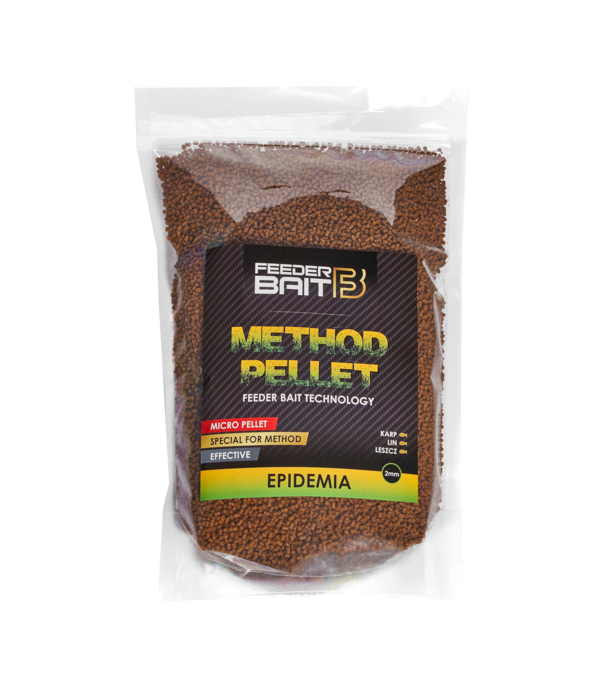

Przynęty i zanęty

Przynęty jakie stosuje są od naszego rodzimego producenta, czyli FeederBait, mają bardzo dobry skład oraz pracę, nie schną zbyt szybko i przede wszystkim dają efekty - najczęściej używam EPIDEMIA i CARP COMPETITION

Pellety i zanęty, których używam również są spod szyldu FeederBait'a, proste przygotowanie, również świetny skład, bardzo dobra praca i skuteczność - najczęściej używam wariantów EPIDEMIA oraz MIX F1